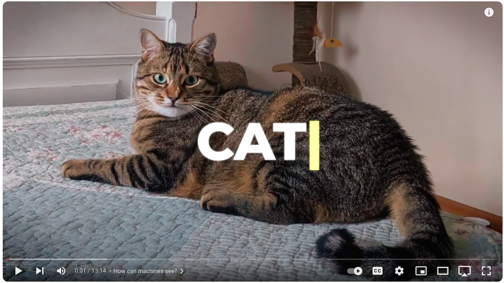

A Deeper Dive
The Introductory Video was great, but we need to expand on a few core concepts.
We assume that most participants in this session are primarily interested in how computer vision might be used in their own research. With that in mind, we plan to expand on the following areas:
Convolutional Neural Networks
How do CNNs actually work? What are the good at? What are their limitations?
Segmentation
- Classifying pixels (car, road, pedestrian).
- Used in self-driving vehicles.
Classification
- Determine what’s in an image.
- Differentiates between dogs, cats, etc.
Detection
- Localizes objects in images.
- Places bounding boxes around detected objects.
Existing Libraries and Algorithms
You don’t have to program a CV algorthm from scratch. There are many open source libraries and packages that have already been developed. Often, these tools can serve as the basis for your specific applicatio with a small amount of tweaking.
Training Models
What types of data are used to train CV models? Where do the data come from?
Hardware Requirements
Hardware requirements for training and model development.
Accelerating CNNs with GPUs
- Difference between CPU and GPU.
- Neural nets are highly parallel, suitable for GPUs.
- GPUs accelerate vision operations, leaving CPUs for other tasks.
Hardware requirements for deployment.
Resources at the University of Idaho.
Industry Use Cases
Medicine
- Speedy extraction of vital image data.
- Detection of tumors, artery issues.
Autonomous Vehicles
- Warning systems and autonomous operations.
Industrial Uses
- Quality control and defect inspection.
- Optical sorting in agriculture.
Computer Vision 4U
What do I need to connect this technology to my research?
- Understand the nature of your data.
- Understand the nature of your task. (Segmentation, Classification, Detection, real time?)
- How much training is required? How unique is your application?
- Where will you get the training data?
Sources
https://www.nvidia.com/en-us/glossary/data-science/computer-vision/